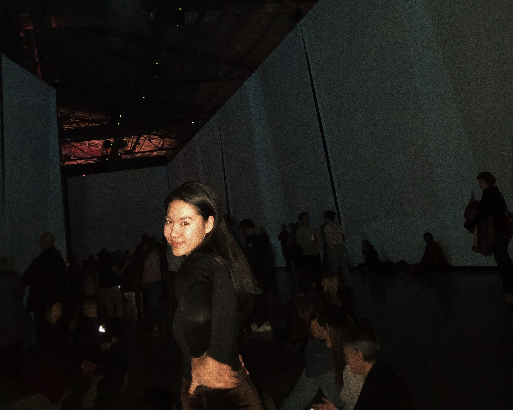

My name is Haley Giang, 19 years old. I was born and raised in Hanoi, Vietnam, went to high school in Arizona, USA. I'm currently a first-year Computer Science and Mathematics major at Oberlin College. I aspire to be a Software Engineer in the near future. In the next section I will go into more details about projects with which I've been involved.
In my free time, I like to read books, dance, and take photos! Here's the link to my Photography page.
You can find information about my technical skills in my CV page. I'll elaborate on my soft skills here.
Some milestone projects of which I've been a part are: